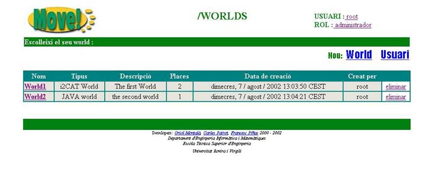
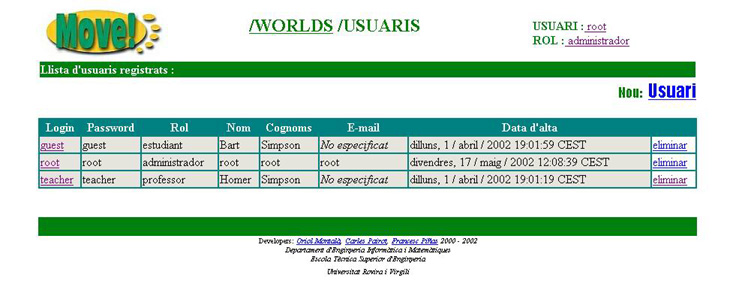

4.1 Informaci� sobre els usuaris registrats
Qualsevol usuari que entri al MOVE! com a administrador, es trobar� que a la pantalla on es mostren els tots els worlds disponibles, a part d'apar�ixer l'opci� de crear un nou World, ara tamb� apareix una nova opci�,

Si cliquem sobre aquesta opci� anirem directament a la zona USUARIS.

En aquesta pantalla podem veure un llistat de tots els usuaris que hi ha registrats al MOVE! i informaci� sobre cadascun d'ells:
- Login: login per a identificar a l'usuari
- Password: contrasenya d'usuari per tal de poder entrar
- Rol: tipus d'usuari:
- administrador
- professor
- estudiant
- Nom: nom de l'usuari
- Cognoms: cognoms de l'usuari
- E-mail: adre�a de correu electr�nic on poder localitzar l'usuari
- Data d'alta: data en qu� l'usuari ha estat registrat en el MOVE! per un administrador
Depenent del tipus d'usuari aquest tindr� m�s o menys privilegis dins el MOVE!.
Podrem eliminar qualsevol dels usuaris clicant sobre  o b� modificar-ne les seves propietats clicant sobre el seu login.
o b� modificar-ne les seves propietats clicant sobre el seu login.
Si per el contrari el que volem �s crear un nou usuari haurem de clicar sobre